Συνδέσεις
Raspberry Pi
Τροφοδοσία
Συνδέεται στην μπρίζα με το τροφοδοτικό του, από μπρίζα σε USB-C.
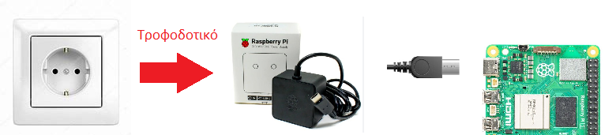
USB Hub
Τροφοδοσία
Συνδέεται με ειδικό τροφοδοτικό στην μπρίζα. ΠΡΕΠΕΙ να υπάρχει η τροφοδοσία, δεν παίρνει μόνο από το Raspberry.
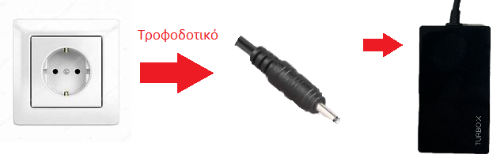
Σύνδεση
Συνδέεται πάνω το Raspberry με USB.
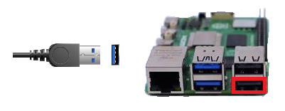
Οθόνες
ARZOPA - Οθόνη για κάμερες
HDMI
Συνδέεται πάνω στο Rasberry μέσω καλωδίου Mini HDMI σε HDMI και αντάπτορα HDMI σε Micro HDMI για να μπορεί να συνδεθεί στο Raspberry από το πλάι. Η θύρα βρίσκεται στα αριστερά της οθόνης.
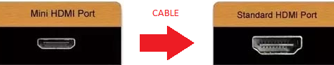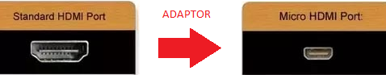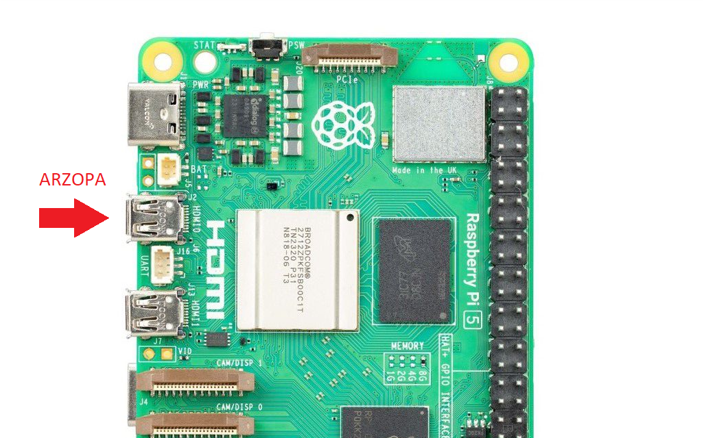
Τροφοδοσία
Συνδέεται σε μπρίζα με USB-C και ΟΧΙ στο Raspberry σε οποιαδήποτε από τις δυο USB-C θύρες στα αριστερά της οθόνης.
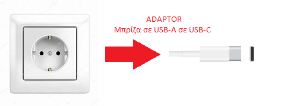
Touchscreen Οθόνη - Οθόνη για παιχνίδια
HDMI
Συνδέεται πάνω στο Raspberry μέσω καλωδίου HDMI σε Micro ΗDMI. Η θύρα βρίσκεται στα δεξιά της οθόνης από την πίσω πλευρά.
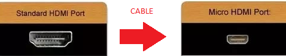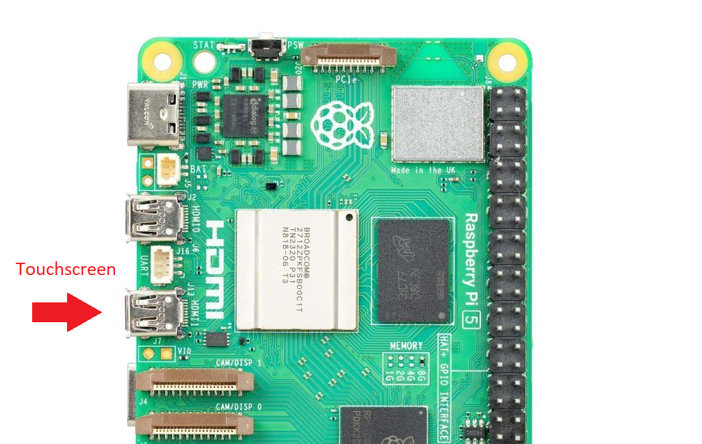
Touch
Συνδέεται πάνω στο Raspberry μέσω καλωδίου Micro USB σε USB πάνω στo USB Hub. Η θύρα βρίσκεται στα δεξιά της οθόνης από την πίσω πλευρά.
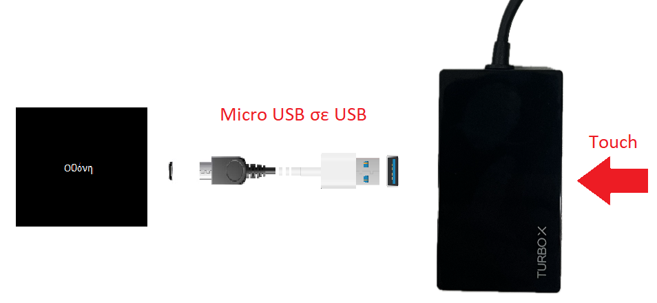
Τροφοδοσία
Συνδέεται σε μπρίζα με ειδικό τροφοδοτικό. Η θύρα βρίσκεται στα δεξιά της οθόνης από την πίσω πλευρά.
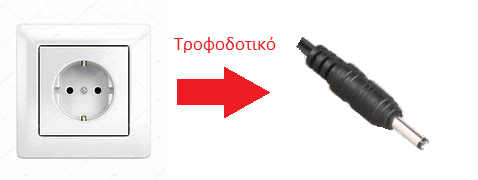
Κάμερες
Θερμική Κάμερα
Σύνδεση
Συνδέεται με καλώδιο USB-C σε USB-A στο Raspberry. Η θύρα βρίσκεται στο πάνω μέρος της κάμερας κάτω από προστατευτικό κάλυμα.
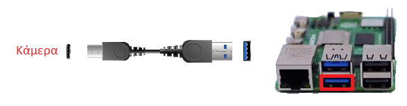
Δεν χρειάζεται τροφοδοσία.
LiveCam! - Κάμερα αναγνώρισης εκφράσεων
Σύνδεση
Συνδέεται απευθείας στο Raspberry με δικό της ενσωματωμένο καλώδιο.
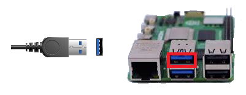
Δεν χρειάζεται τροφοδοσία.
NETUM - Κάμερα για ζωγραφιές
Σύνδεση
Συνδέεται απευθείας στο Raspberry με δικό της ενσωματωμένο καλώδιο.
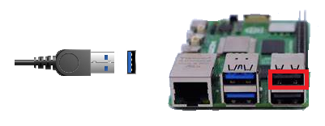
Δεν χρειάζεται τροφοδοσία.
Κώδικας
Αρχικοποίηση
Με το που συνδεθεί το Raspberry στο ρεύμα, θα ανοίξει στο desktop. Αν οι οθόνες δεν έχουν συνδεθεί, τότε με το που συνδεθεί η πρώτη θα εμφανιστεί εκεί το dekstop.
Όταν οι συνδέσεις έχουν ολοκληρωθεί, για να αρχίσει ο κώδικας πρέπει να γίνουν τα εξής:
- Κάτω αριστερά, από το λογότυπο του Raspberry, κάνουμε click και από το Programming επιλέγουμε το Visual Studio Code
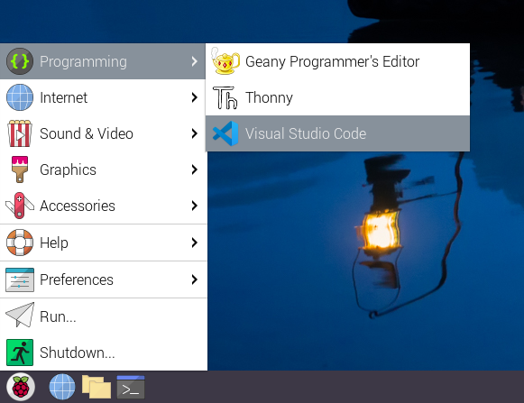
- Ανοίγουμε το Visual Studio Code, και επιλέγουμε το αρχείο
.FeelosophAI.py από το μενού στα αριστερά.
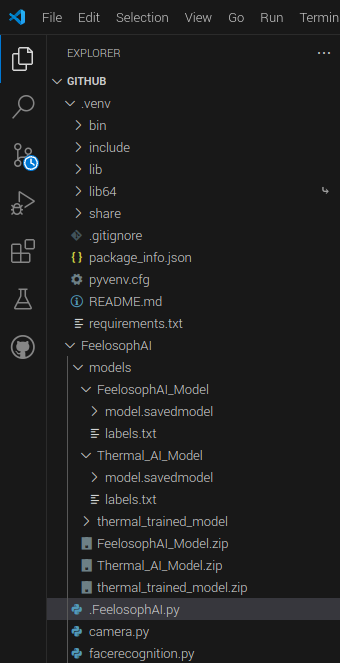
- Πάνω δεξιά πατάμε το Play για να ξεκινήσει ο κώδικας.
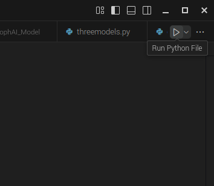
- Μετά από λίγη ώρα θα εμφανιστούν τρία παράθυρα, ένα με τις κάμερες, ένα με τα παιχνίδια και ένα με την μουσική. Παρακάτω εμφανίζεται το παράθυρο των καμερών.
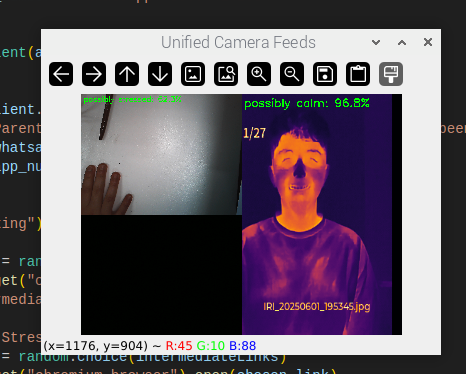
- Αν ζητηθεί κωδικός, είναι ο QwErT1@3$5.
- Το παράθυρο της μουσικής είναι μια σελίδα στο youtube, πρέπει να ρυθμιστεί σωστά η ένταση του ήχου και το παράθυρο να ελαχιστοποιηθεί.
- Το παράθυρο με τα παιχνίδια πρέπει να μεταφερθεί στην οθόνη αφής και να μεγιστοποιηθεί, όχι όμως να μπει σε fullscreen, διότι πρέπει να μπορούμε να κλείνουμε τις καρτέλες. ΔΕΝ πρέπει να κλείσουμε την κεντρική καρτέλα με τα παιχνίδια.
- Το παράθυρο με τις κάμερες μεγιστοποιείται σε fullscreen κάνοντας κλικ πάνω του και πατώντας το f από το πληκτρολόγιο. Αντίστοιχα, για να βγει από fullscreen ξαναπατάμε το f.
- Τα παράθυρα πρέπει τελικά να εμφανίζονται όπως την εικόνα παρακάτω, το καθένα στην οθόνη του.
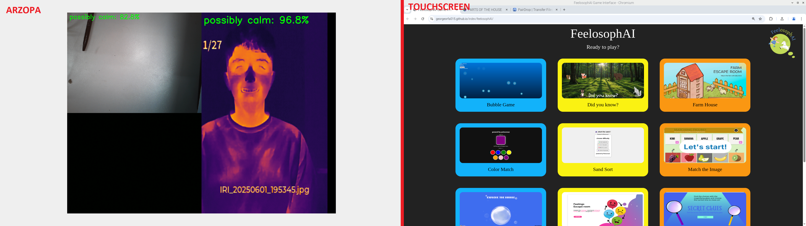
- Το πρόγραμμα δουλεύει κανονικά, και θα ανοίξει κάποιο παιχνίδι όταν ανιχνευθεί από την κάμερα εκφράσεων ένα άτομο, για αυτό παραμένει κλειστή μέχρι να χρειαστεί να τρέξει ο κώδικας.
Γενικός χειρισμός
Μετά την αρχικοποίηση, ο χειρισμός του προγράμματος γίνεται ως εξής:
- Η κάμερα εκφράσεων μένει κλειστή, καθώς αν μείνει ανοιχτή θα ανοίγει συνεχόμενα παιχνίδια.
- Όταν θέλουμε να δείξουμε σε κάποιον την λειτουργία του προγράμματος, ανοίγουμε την κάμερα μέχρι να ανοίξει μια σελίδα στην οθόνη αφής και μετά την ξανακλείνουμε ή την τοποθετούμε κάπου που να μην φαίνεται το πρόσωπο κάποιου ατόμου, έτσι ώστε να μην ανοίγουν συνεχόμενα παιχνίδια.
- Σε περίπτωση που χρειαστεί να σταματήσει η εκτέλεση του κώδικα, κάντε κλικ στο παράθυρο με τις κάμερες και πατήστε το q στο πληκτρολόγιο και ακολουθήστε τις παραπάνω οδηγίες.
Θερμική κάμερα
Η θερμική κάμερα έχει 4 κουμπιά από μπροστά και δυο από πίσω.
Μπροστά κουμπιά
- Το κουμπί στα δεξιά λειτουργεί ως "πίσω" αν πατηθεί μια φορά, και ως κουμπί ενεργοποίησης/απενεργοποίησης αν πατηθεί παρατεταμένα.
- Το κουμπί στα αριστερά λειτουργεί ως OK/Enter ή ανοίγει το μενού.
- Τα κεντρικά κουμπιά λειτουργούν ως κουμπιά επιλογής πάνω και κάτω. Στην αρχική οθόνη, αλλάζει το mode της κάμερας. Αυτό δεν χρειάζεται αλλαγή και πρέπει να παραμένει στο IR για την κανονική λειτουργία του κώδικα.
Πίσω κουμπιά
- Το πάνω κουμπί κάνει refocus της κάμερας.
- Το κάτω κουμπί τραβάει φωτογραφία με ένα πάτημα, ενώ τραβάει βίντεο αν πατηθεί παρατεταμένα.
Μενού
- Οι φωτογραφίες και τα βίντεο βρίσκονται στο Gallery, πρώτη επιλογή στο μενού.
- Στο Review βρίσκονται οι φωτογραφίες.
- Στο View Videos βρίσκονται τα βίντεο.
Επίλυση τεχνικών προβλημάτων
Σε περίπτωση που ο κώδικας δεν αρχίσει, ή οι κάμερες δεν εμφανίζονται σωστά (δηλαδή εμφανίζονται σε λάθος τοποθεσία ή με λάθος χρώματα), τότε ακολουθήστε τις εξής οδηγίες:
- Κάνετε κλικ στο παράθυρο με τις κάμερες και πατήστε το q για να σταματήσει το πρόγραμα.
- Κάτω αριστερά, ανοίξτε το τερματικό.
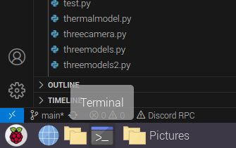
- Πληκτρολογήστε την εντολή
v4l2-ctl --list-device στο τερματικό.
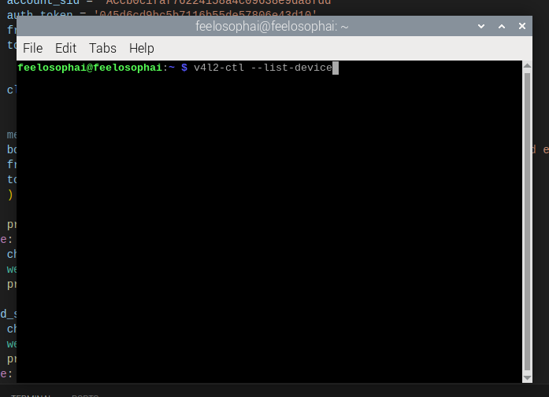
- Η έξοδος αυτής της εντολής θα είναι περίπου όπως φαίνεται από κάτω.
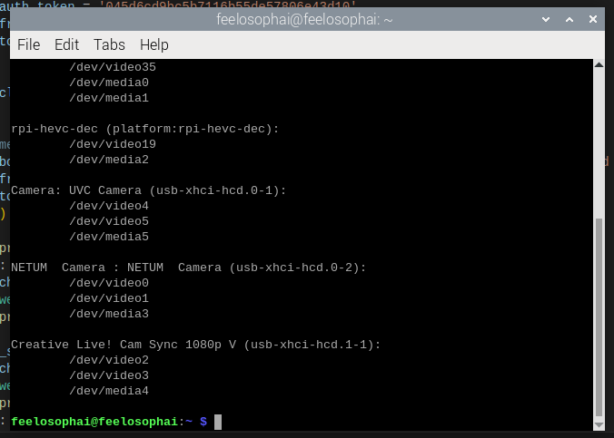
- Η UVC Camera αντιστοιχεί στην θερμική, η NETUM Camera αντιστοιχεί στην κάμερα για τις ζωγραφιές, ενώ η Creative Live! Cam Sync 1080p V αντιστοιχεί στην κάμερα για τα συναισθήματα. Εαν κάποια κάμερα δεν εμφανίζεται, τότε έχει γίνει κάποιο λάθος στην σύνδεση και πρέπει να ξαναγίνει. Κάτω από κάθε κάμερα υπάρχει ένα /dev/videoX, όπου X ένας αριθμός.
- Για κάθε κάμερα, ο αριθμός που είναι στην γραμμή αμέσως μετά από το όνομα της κάμερας αντιστοιχεί σε αυτή την κάμερα, δηλαδή για παράδειγμα, στην θερμική κάμερα θα αντιστοιχεί ο αριθμός 4 όπως φαινεται παραπάνω.
- Στον κώδικα, στην γραμμή 30 υπάρχουν τρεις γραμμές κώδικα. Η μεταβλητή
thermal_cam_index αντιστοιχεί στην θερμική κάμερα, η rgb_cam_index αντιστοιχεί στην κάμερα για τις ζωγραφιές, ενώ η deepface_cam_index αντιστοιχεί στην κάμερα εκφράσεων. Για να δουλέψει το πρόγραμμα, πρέπει δίπλα από κάθε μεταβλητή να μπει ο αριθμός που αντιστοιχεί σε κάθε κάμερα από την προηγούμενη εντολή, δηλαδή για παράδειγμα, 4, 0 και 2 σύμφωνα με την παρακάτω εικόνα.
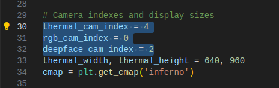
- Εάν δεν δουλέψει, κάνετε reboot στο Raspberry με την εντολή
sudo reboot και επαναλάβετε αυτή την διαδικασία.
Εναλλακτικό σενάριο: σε περίπτωση που η θερμική κάμερα δεν αναγνωρίζεται, κάνετε τα εξής:
- Στην θερμική κάμερα, πατήστε το κουμπί OK για να ανοίξει το μενού.
- Πηγαίνετε προς τα κάτω μέχρι να βρείτε το USBMode.
- Αν λέει Projection, πατήστε ΟΚ δύο φορές συνεχόμενα, αλλιώς πατήστε ΟΚ μία φορά.